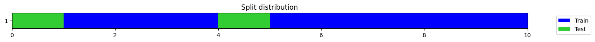

xb = torch.rand(16, 51, 128, requires_grad=True).to(default_device())
output = _TSiTEncoderLayer(128, 16).to(default_device())(xb)
# Then try a simple backward pass
target = torch.rand_like(output)
loss = ((output - target)**2).mean()
loss.backward()TSiT
This is a PyTorch implementation created by Ignacio Oguiza (oguiza@timeseriesAI.co) based on ViT (Vision Transformer):
Dosovitskiy, A., Beyer, L., Kolesnikov, A., Weissenborn, D., Zhai, X., Unterthiner, T., … & Houlsby, N. (2020).
An image is worth 16x16 words: Transformers for image recognition at scale. arXiv preprint arXiv:2010.11929.
xb = torch.rand(16, 51, 128, requires_grad=True).to(default_device())
output = _TSiTEncoder(128, 16).to(default_device())(xb)
# Then try a simple backward pass
target = torch.rand_like(output)
loss = ((output - target)**2).mean()
loss.backward()TSiTPlus
TSiTPlus (c_in:int, c_out:int, seq_len:int, d_model:int=128, depth:int=6, n_heads:int=16, act:str='gelu', lsa:bool=False, attn_dropout:float=0.0, dropout:float=0.0, drop_path_rate:float=0.0, mlp_ratio:int=1, qkv_bias:bool=True, pre_norm:bool=False, use_token:bool=False, use_pe:bool=True, cat_pos:Optional[list]=None, n_cat_embeds:Optional[list]=None, cat_embed_dims:Optional[list]=None, cat_padding_idxs:Optional[list]=None, token_size:int=None, tokenizer:Optional[Callable]=None, feature_extractor:Optional[Callable]=None, flatten:bool=False, concat_pool:bool=True, fc_dropout:float=0.0, use_bn:bool=False, bias_init:Union[float,list,NoneType]=None, y_range:Optional[tuple]=None, custom_head:Optional[Callable]=None, verbose:bool=True, **kwargs)
*Time series transformer model based on ViT (Vision Transformer):
Dosovitskiy, A., Beyer, L., Kolesnikov, A., Weissenborn, D., Zhai, X., Unterthiner, T., … & Houlsby, N. (2020). An image is worth 16x16 words: Transformers for image recognition at scale. arXiv preprint arXiv:2010.11929.
This implementation is a modified version of Vision Transformer that is part of the grat timm library (https://github.com/rwightman/pytorch-image-models/blob/72b227dcf57c0c62291673b96bdc06576bb90457/timm/models/vision_transformer.py)
Args: c_in: the number of features (aka variables, dimensions, channels) in the time series dataset. c_out: the number of target classes. seq_len: number of time steps in the time series. d_model: total dimension of the model (number of features created by the model). depth: number of blocks in the encoder. n_heads: parallel attention heads. Default:16 (range(8-16)). act: the activation function of positionwise feedforward layer. lsa: locality self attention used (see Lee, S. H., Lee, S., & Song, B. C. (2021). Vision Transformer for Small-Size Datasets. arXiv preprint arXiv:2112.13492.) attn_dropout: dropout rate applied to the attention sublayer. dropout: dropout applied to to the embedded sequence steps after position embeddings have been added and to the mlp sublayer in the encoder. drop_path_rate: stochastic depth rate. mlp_ratio: ratio of mlp hidden dim to embedding dim. qkv_bias: determines whether bias is applied to the Linear projections of queries, keys and values in the MultiheadAttention pre_norm: if True normalization will be applied as the first step in the sublayers. Defaults to False. use_token: if True, the output will come from the transformed token. This is meant to be use in classification tasks. use_pe: flag to indicate if positional embedding is used. n_cat_embeds: list with the sizes of the dictionaries of embeddings (int). cat_embed_dims: list with the sizes of each embedding vector (int). cat_padding_idxs: If specified, the entries at cat_padding_idxs do not contribute to the gradient; therefore, the embedding vector at cat_padding_idxs are not updated during training. Use 0 for those categorical embeddings that may have #na# values. Otherwise, leave them as None. You can enter a combination for different embeddings (for example, [0, None, None]). cat_pos: list with the position of the categorical variables in the input. token_size: Size of the embedding function used to reduce the sequence length (similar to ViT’s patch size) tokenizer: nn.Module or callable that will be used to reduce the sequence length feature_extractor: nn.Module or callable that will be used to preprocess the time series before the embedding step. It is useful to extract features or resample the time series. flatten: flag to indicate if the 3d logits will be flattened to 2d in the model’s head if use_token is set to False. If use_token is False and flatten is False, the model will apply a pooling layer. concat_pool: if True the head begins with fastai’s AdaptiveConcatPool2d if concat_pool=True; otherwise, it uses traditional average pooling. fc_dropout: dropout applied to the final fully connected layer. use_bn: flag that indicates if batchnorm will be applied to the head. bias_init: values used to initialized the output layer. y_range: range of possible y values (used in regression tasks). custom_head: custom head that will be applied to the network. It must contain all kwargs (pass a partial function) verbose: flag to control verbosity of the model.
Input: x: bs (batch size) x nvars (aka features, variables, dimensions, channels) x seq_len (aka time steps)*
bs = 16
nvars = 4
seq_len = 50
c_out = 2
xb = torch.rand(bs, nvars, seq_len, requires_grad=True).to(default_device())
model = TSiTPlus(nvars, c_out, seq_len, attn_dropout=.1, dropout=.1, use_token=True)
output = model.to(default_device())(xb)
target = torch.rand_like(output)
loss = ((output - target)**2).mean()
loss.backward()
output.shapetorch.Size([16, 2])bs = 16
nvars = 4
seq_len = 50
c_out = 2
xb = torch.rand(bs, nvars, seq_len)
model = TSiTPlus(nvars, c_out, seq_len, attn_dropout=.1, dropout=.1, use_token=True)
test_eq(model(xb).shape, (bs, c_out))
model = TSiTPlus(nvars, c_out, seq_len, attn_dropout=.1, dropout=.1, use_token=False)
test_eq(model(xb).shape, (bs, c_out))
model(xb).shapetorch.Size([16, 2])bs = 16
nvars = 4
seq_len = 50
c_out = 2
xb = torch.rand(bs, nvars, seq_len)
bias_init = np.array([0.8, .2])
model = TSiTPlus(nvars, c_out, seq_len, bias_init=bias_init)
test_eq(model(xb).shape, (bs, c_out))
test_eq(model.head[1].bias.data, tensor(bias_init))bs = 16
nvars = 4
seq_len = 50
c_out = 1
xb = torch.rand(bs, nvars, seq_len)
bias_init = 8.5
model = TSiTPlus(nvars, c_out, seq_len, bias_init=bias_init)
test_eq(model(xb).shape, (bs, c_out))
test_eq(model.head[1].bias.data, tensor([bias_init]))bs = 16
nvars = 4
seq_len = 50
c_out = 2
xb = torch.rand(bs, nvars, seq_len)
bias_init = np.array([0.8, .2])
model = TSiTPlus(nvars, c_out, seq_len, bias_init=bias_init, lsa=True)
test_eq(model(xb).shape, (bs, c_out))
test_eq(model.head[1].bias.data, tensor(bias_init))from tsai.models.layers import lin_nd_headbs = 16
nvars = 4
seq_len = 50
c_out = 2
d = 7
xb = torch.rand(bs, nvars, seq_len)
model = TSiTPlus(nvars, c_out, seq_len, d=7, custom_head=lin_nd_head)
test_eq(model(xb).shape, (bs, d, c_out))
xb = torch.rand(bs, nvars, seq_len, requires_grad=True)
output = model(xb)
# Then try a simple backward pass
target = torch.rand_like(output)
loss = ((output - target)**2).mean()
loss.backward()Feature extractor
It’s a known fact that transformers cannot be directly applied to long sequences. To avoid this, we have included a way to subsample the sequence to generate a more manageable input.
from tsai.data.validation import get_splits
from tsai.data.core import get_ts_dlsX = np.zeros((10, 3, 5000))
y = np.random.randint(0,2,X.shape[0])
splits = get_splits(y)
dls = get_ts_dls(X, y, splits=splits)
xb, yb = dls.train.one_batch()
xb
TSTensor(samples:8, vars:3, len:5000, device=mps:0, dtype=torch.float32)If you try to use TSiTPlus, it’s likely you’ll get an ‘out-of-memory’ error.
To avoid this you can subsample the sequence reducing the input’s length. This can be done in multiple ways. Here are a few examples:
# Separable convolution (to avoid mixing channels)
feature_extractor = Conv1d(xb.shape[1], xb.shape[1], ks=100, stride=50, padding=0, groups=xb.shape[1]).to(default_device())
feature_extractor.to(xb.device)(xb).shapetorch.Size([8, 3, 99])# Convolution (if you want to mix channels or change number of channels)
feature_extractor=MultiConv1d(xb.shape[1], 64, kss=[1,3,5,7,9], keep_original=True).to(default_device())
test_eq(feature_extractor.to(xb.device)(xb).shape, (xb.shape[0], 64, xb.shape[-1]))# MaxPool
feature_extractor = nn.Sequential(Pad1d((0, 50), 0), nn.MaxPool1d(kernel_size=100, stride=50)).to(default_device())
feature_extractor.to(xb.device)(xb).shapetorch.Size([8, 3, 100])# AvgPool
feature_extractor = nn.Sequential(Pad1d((0, 50), 0), nn.AvgPool1d(kernel_size=100, stride=50)).to(default_device())
feature_extractor.to(xb.device)(xb).shapetorch.Size([8, 3, 100])Once you decide what type of transform you want to apply, you just need to pass the layer as the feature_extractor attribute:
bs = 16
nvars = 4
seq_len = 1000
c_out = 2
d_model = 128
xb = torch.rand(bs, nvars, seq_len)
feature_extractor = partial(Conv1d, ks=5, stride=3, padding=0, groups=xb.shape[1])
model = TSiTPlus(nvars, c_out, seq_len, d_model=d_model, feature_extractor=feature_extractor)
test_eq(model.to(xb.device)(xb).shape, (bs, c_out))Categorical variables
from tsai.utils import alphabet, ALPHABETa = alphabet[np.random.randint(0,3,40)]
b = ALPHABET[np.random.randint(6,10,40)]
c = np.random.rand(40).reshape(4,1,10)
map_a = {k:v for v,k in enumerate(np.unique(a))}
map_b = {k:v for v,k in enumerate(np.unique(b))}
n_cat_embeds = [len(m.keys()) for m in [map_a, map_b]]
szs = [emb_sz_rule(n) for n in n_cat_embeds]
a = np.asarray(a.map(map_a)).reshape(4,1,10)
b = np.asarray(b.map(map_b)).reshape(4,1,10)
inp = torch.from_numpy(np.concatenate((c,a,b), 1)).float()
feature_extractor = partial(Conv1d, ks=3, padding='same')
model = TSiTPlus(3, 2, 10, d_model=64, cat_pos=[1,2], feature_extractor=feature_extractor)
test_eq(model(inp).shape, (4,2))Sequence Embedding
Sometimes you have a samples with a very long sequence length. In those cases you may want to reduce it’s length before passing it to the transformer. To do that you may just pass a token_size like in this example:
t = torch.rand(8, 2, 10080)
SeqTokenizer(2, 128, 60)(t).shapetorch.Size([8, 128, 168])t = torch.rand(8, 2, 10080)
model = TSiTPlus(2, 5, 10080, d_model=64, token_size=60)
model(t).shapetorch.Size([8, 5])